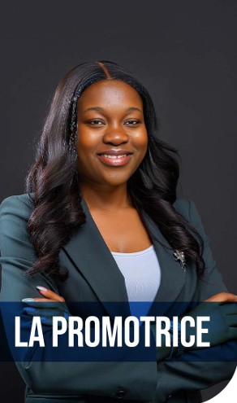

Une décennie d'expertise au service de vos évasions.

Créée en 2015, HOPE TRAVELS AND TOURS est aujourd'hui reconnue comme l'une des meilleures agences de voyages au Togo, grâce à la vision de sa fondatrice et directrice, Mme Afi Bignon Hountondji (épouse Alou).
Formatrice et consultante en voyages, elle est passionnée de découverte et de relations humaines, avec un sens du service fortement affirmé.
Visionnaire et engagée, Mme Hountondji met continuellement l'innovation et la satisfaction client au cœur du travail de l'agence, développant des stratégies pour simplifier vos démarches et sécuriser vos déplacements.
Sous son impulsion, l'agence s'est distinguée par son professionnalisme et ses alliances solides. Notamment le partenariat d'excellence avec Royal Caribbean (via la représentation exclusive de God's Own Travels Agency - GOTA au Bénin), permettant à nos clients de vivre des croisières inoubliables dans les meilleures conditions.